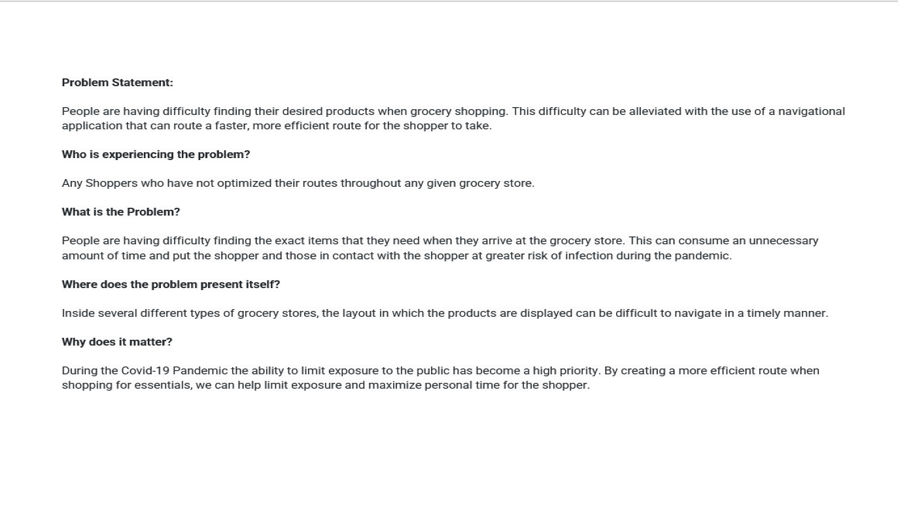

Problem Statement: Grocery Route
People are having difficulty finding their desired products when grocery shopping. This difficulty can be alleviated with the use of a navigational application that can route a faster, more efficient route for the shopper to take.
Affinity Diagram: Grocery Route
My group and I discussed various aspects of, and ideas for, routing paths within grocery stores.
Personas: 2 Personas for Grocery Route

Personas of 2 typical grocery route app users. 2 additional personas are available in the PDF linked to the images and header.
Personas: 4 Story Boards for Grocery Route

The story boards show a potential user experience with the Grocery Route App
Sketches
Rough ideas of how the application may look.
Paper Prototype
A paper walkthrough of the potential look of every screen in the application.